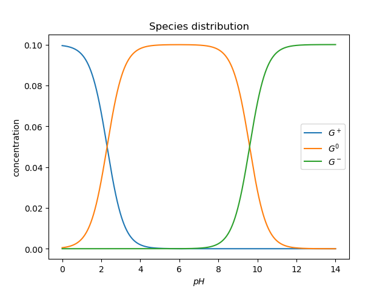
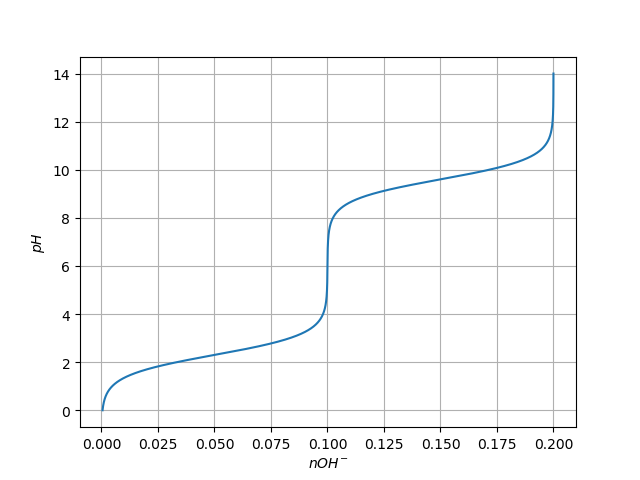

Example: Simulation of the acid-base changes in an amino-acid solution¶
Here we make a simple simulation of the changes in pH and charge distribution of an amino acid in solution.
Focus will be on Glycine first, but the derivarion and the analysis can easily be applied to the other amino acids if the values of the pKa are known.
Derivation of the relevant equations¶
We first seek to calculate the charge distribution of glycine in solution as a function of pH.
At any pH, we can find glycine as a mixture of three species:
NH^{+}_3 - CH_2 - COOH the positive form, here represented by G^+.
NH_2 - CH_2 - COOH the neutral form, here represented by G^0.
NH_2 - CH_2 - COO^{-} the negative form, here represented by G^-.
Total of different forms is constant:
G^+ + G^0 + G^- = G_{tot}
There are two equilibria
pH = pK1 + log_{10} \left( \frac{G^0}{G^+} \right)
pH = pK2 + log_{10} \left( \frac{G^-}{G^0} \right)
We need to calculate all the forms of the amino acid as a function of pH.
Let's make
f1 = \frac{G^0}{G^+} and f2 = \frac{G^-}{G^0}
Then
f1 = 10^{pH - pK1} and f2 = 10^{pH - pK2}
Now, using these in the total amino acid conservation equation,
G^+ + G^+ f1 + G^+ f1 f2 = G_{tot}
or
G^+ = \frac{G_{tot}}{1 + f1 + f1f2}
And, by definition of f1 and f2,
G^0 = G^+ f1
G^- = G^0 f2
The sequence of calculations is then
pH \longrightarrow f1, f2 \longrightarrow G^+ \longrightarrow G^0 \longrightarrow G^-
An additional problem is the calculation of the amount of OH^- than must be used to drive the solution to a given pH, starting from a very low pH solution
This is simply
nOH^- = nG^0 + 2 nG^-
Analysis¶
Computation¶
Make the necessary imports
from numpy import linspace import matplotlib.pyplot as plt
Use derived equations to compute species distribution and the amount of base necessary to change the solution into a given pH value.
pK1 = 2.3 pK2 = 9.6 Gt = 0.1 # M pH = linspace(0, 14, 14000) f1 = 10.0**(pH - pK1) f2 = 10.0**(pH - pK2) Gplus = Gt / (1 + f1 + f1*f2) Gzero = f1 * Gplus Gminus = f2 * Gzero nOH = Gzero + 2 * Gminus
Plots¶
Obtain a plot of the distribution of the three different species of the amino acid as a function of pH.
%matplotlib inline # This is to be used in IPython/Jupyter notebooks # This makes plots appear "inline" as part of cell's outputs.
plt.plot(pH, Gplus) plt.plot(pH, Gzero) plt.plot(pH, Gminus) plt.ylabel('concentration') plt.xlabel('$pH$') plt.legend(('$G^+$','$G^0$', '$G^-$')) plt.title('Species distribution') plt.show()

Plot also the amount of base necessary to change the pH of the solution, but exchange the x and y axis, so that it looks like we are titrating the solution.
plt.plot(nOH, pH) plt.ylabel('$pH$') plt.xlabel('$nOH^{-}$') plt.grid() plt.show()
